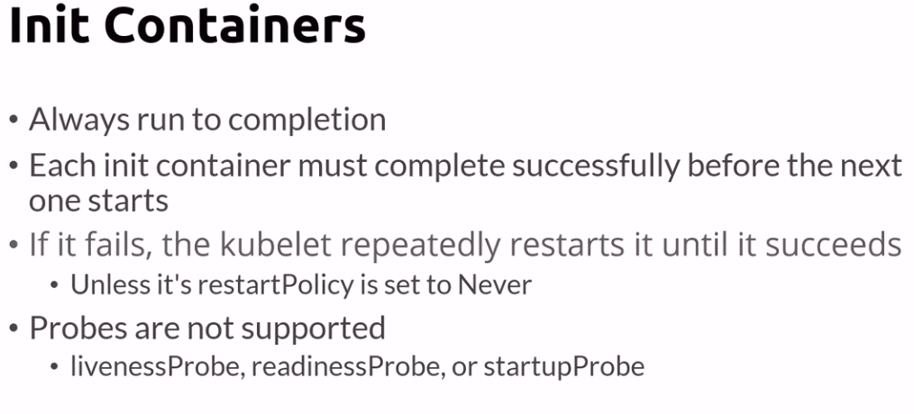

init containers
: specialized containers that run before app containers in a
Pod
. Init containers can contain utilities or setup scripts not present in an app image.

eXample of a pod with 2 init containers: